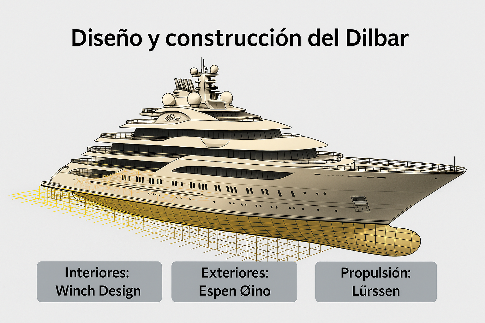

Dilbar: Poder, Lujo y Controversia en 156 Metros de Ingeniería Naval
El Dilbar es mucho más que un yate. Es una obra maestra de la ingeniería naval y el diseño de lujo, símbolo de poder y exclusividad. Propiedad del multimillonario ruso-uzbeko Alisher Usmanov, el Dilbar ha sido calificado como uno de los yates más grandes y complejos jamás construidos.
Construcción y Diseño
Diseño Exterior
El diseño exterior del Dilbar fue realizado por Espen Øino International, un estudio de arquitectura naval reconocido por su enfoque elegante y funcional. La silueta del yate destaca por sus líneas modernas, proporciones equilibradas y detalles estilizados que le otorgan una presencia imponente en el agua.
Diseño Interior
El interior del yate fue desarrollado por Winch Design, un estudio británico especializado en interiores de lujo. Utilizando materiales exclusivos, crearon espacios amplios y sofisticados pensados para el confort de los invitados, incluyendo zonas de relajación, entretenimiento y bienestar.
Ingeniería y Propulsión
La construcción del yate fue llevada a cabo por el renombrado astillero alemán Lürssen, que entregó la embarcación en 2016. El Dilbar cuenta con un casco de acero y una superestructura de aluminio. Está propulsado por seis generadores diésel-eléctricos, que en conjunto generan 40.000 caballos de fuerza, permitiéndole alcanzar una velocidad máxima de 22,5 nudos y una velocidad de crucero de entre 16 y 18 nudos. Su autonomía estimada es de al menos 6.000 millas náuticas.
Especificaciones Técnicas
- Eslora: 156 metros
- Manga: 23,5 metros
- Calado: 6 metros
- Desplazamiento: 15.917 toneladas
- Valor estimado: 600 millones de euros
Capacidad y Comodidades
- 36 invitados en 20 camarotes
- 96 tripulantes
- Piscina interior de 180 m³
- Dos helipuertos
- Spa, gimnasio, sauna, salón de belleza
- Sala de masajes y entretenimiento de alta gama
El Dilbar en Números
- Velocidad máxima: 22,5 nudos
- Tripulación: 96 personas
- Capacidad de invitados: 36 personas
- Costo de operación anual: ~60 millones de dólares
- Volumen interior: 15.917 GT
- Premio: "Motor Yacht of the Year" en 2017
Propiedad y Controversia
El yate pertenece oficialmente a Navis Marine Ltd. (Islas Caimán), pero se atribuye su propiedad final a Gulbahor Ismailova, hermana de Usmanov, a través de un fideicomiso. Fue incautado por autoridades alemanas en 2022 debido a sanciones por la invasión rusa a Ucrania. Usmanov calificó las sanciones como "injustas y difamatorias" y perdió la apelación.
Avistamientos del Dilbar
Ha sido fotografiado en:
- Porto Cervo, Sicilia
- Valletta, Malta
- Mónaco y Riviera Francesa
- Barcelona (Puerto Port Vell) – amarre privado hasta 2036
Dilbar en Barcelona
Conclusión
El superyate Dilbar no es solo un símbolo de lujo, sino también de poder, ingeniería y controversia. Su tamaño, diseño, tecnología y comodidades lo posicionan como una de las embarcaciones más impresionantes del planeta.